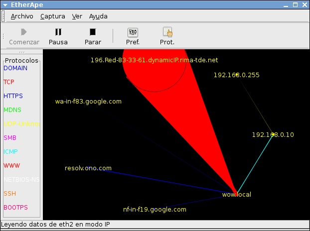

Monitor de procesos interactivo basado en ncurses. Su finalidad principal fue sustituir al famoso top de Unix mencionado en el tema 1. Se trata de un programa sumamente completo y de gran utilidad para todo administrador de sistemas tipo Unix.
Sus principales ventajas radican en la facilidad de uso, obtención de la información en tiempo real. Es posible enviar señales a los procesos de forma sencilla, así como ordenadlos mediante diferentes medidas. También muestra información sobre el estado actual de la memoria RAM y SWAP.
Personalmente la característica que más me gusta de este programa es que debido a que está destinado a modo texto (ncurses) puede ser usado por SSH muy eficientemente.
Este curioso aunque sencillo monitor de red nos muestra graficamente el tráfico que tiene un determinado interfaz de red en tiempo real.
El programa muestra las direcciones IPs con las que existen comunicación unidas a la nuestra mediante una línea, pero la característica más interesante es que, como se puede observar en la captura adjunta, el grosor de dichas líneas es proporcionales al tr´fico que existe entre nuestro ordenador y dicho host, obteniendo de esta forma una visión precisa e intuitiva del tráfico de red.
Además tambien extrae información del tráfico de los demás hosts de nuestra red.
En la captura, wow.local es mi ordenador, el host acabado en .rima-tde.net desde el que estaba descargando un fichero y el host 192.168.0.10 otro de la misma red al que estaba haciendole un ping en el momento de la captura.
Hablando de este monitor de red seríamos capaces de escribir libros.
Esta aplicación analiza el tráfico de red y posteriormente almacena detalladamente la información en una base de datos, dicha información es utilizada posteriormente para construir numerosas estadísticas en las que se incluyen distintos tipos de gráficos, diagramas y análisis. Además disponemos de informes en tiempo real del tráfico de red.
A a toda esta información se pueden acceder via remotamente vía Web. También es descatable la cantidad de protocolos que soporta así como la flexibilidad a la hora de configurar sus opciones. Es una herramienta indispensable para cualquier administrador de red
En este documento PDF podemos ver un algunos informes extraidos de mi propio servidor doméstico, los incluyo externamente debido a que es muy extenso.
Siendo estrictos, no se trata de ningún tipo de monitor, es una aplicación que tiene diversos applets llamados desklets (o gdesklets) los cuales muestran diferente información en tiempo real (monitorean) del ordenador.
La información pese a ser útil no es demasiado completa, la aplicación está más centrada en el diseño de los desklets que en la cantidad de información.
Está orientada al usuario medio. En la imagen se muestran dos gdesklets, el superior muestra el estado de la memoria RAM y SWAP y el inferior el tráfico de red.